Cytometer Receiver — Руководство пользователя
Приём, привязка и обработка данных гематологических анализаторов (Mindray BC‑3200, ABX Micros ES 60 и др.)
1. О программе
Приложение принимает результаты измерений с цитометров и помогает лаборанту:
- получать пробы с анализаторов (Mindray BC‑3200, ABX Micros ES 60 и др.) через COM‑порт;
- видеть параметры (WBC, RBC, PLT и др.) и гистограммы в реальном времени;
- привязывать пробу к пациенту и антигену (или отмечать как эталон);
- складывать пробы в очередь и собирать из них обследования;
- листать недавние результаты пациента, печатать графики, загружать пробы из файла;
- пользоваться ИИ‑помощником Druck AI для интерпретации и отчётов.
Требования к компьютеру
Минимум, чтобы приложение работало на рабочем ПК/ноутбуке лаборатории:
| Компонент | Минимум |
|---|---|
| Операционная система | Windows 10 / 11 (64‑бит). Управление COM‑портом использует средства Windows. |
| Процессор | Любой современный x64, 2 ядра и больше. |
| Оперативная память | 4 ГБ (рекомендуется 8 ГБ). |
| Свободно на диске | ~500 МБ (приложение + окружение или .exe). |
| Экран | 1280×720 и выше. |
| Порт для цитометра | Свободный USB/COM‑порт; для Mindray — драйвер CH340. |
| Права | Администратор — нужен для перезапуска COM‑порта (лаунчер запрашивает автоматически). |
| Сеть | Доступ к серверу лаборатории (та же Wi‑Fi/LAN или Tailscale), порт 8000. |
| Python | Только при запуске из исходников (через .bat) — Python 3.12+. Для .exe Python не нужен. |
2. Запуск и вход в систему
Запустить программу можно двумя способами:
- Готовый
CytometerReceiver.exe(рекомендуется): скачайте его со страницы релизов на GitHub и запустите от имени администратора (правый клик → «Запуск от имени администратора»). Ничего устанавливать не нужно — Python и всё необходимое уже внутри. - Из исходников: двойной клик по
cytometer-receiver.bat— он сам запросит права администратора и при первом запуске создаст окружение (нужен установленный Python 3.12).
Права администратора нужны для перезапуска COM‑порта. Появится окно входа — заполните три поля и нажмите «Войти»:
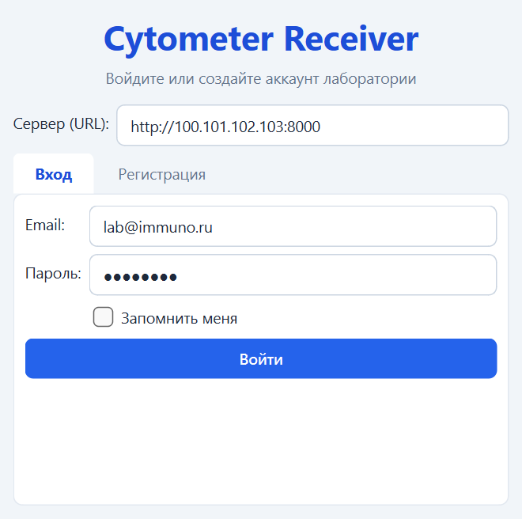
- Сервер (URL) — адрес сервера лаборатории:
http://адрес:8000. В одной сети — локальный IP (http://192.168.0.10:8000), между сетями — адрес Tailscale (http://100.x.x.x:8000). Порт 8000 обязателен. - Email — ваш рабочий e‑mail (логин).
- Пароль — ваш пароль. Галочка «Запомнить меня» сохраняет сессию; по умолчанию выключена — включите её на своём рабочем компьютере.
3. Главное окно и меню
После входа открывается главное окно. Сверху — строка меню, ниже — панель инструментов, привязка пробы к пациенту, таблица параметров и гистограммы, внизу — журнал событий.
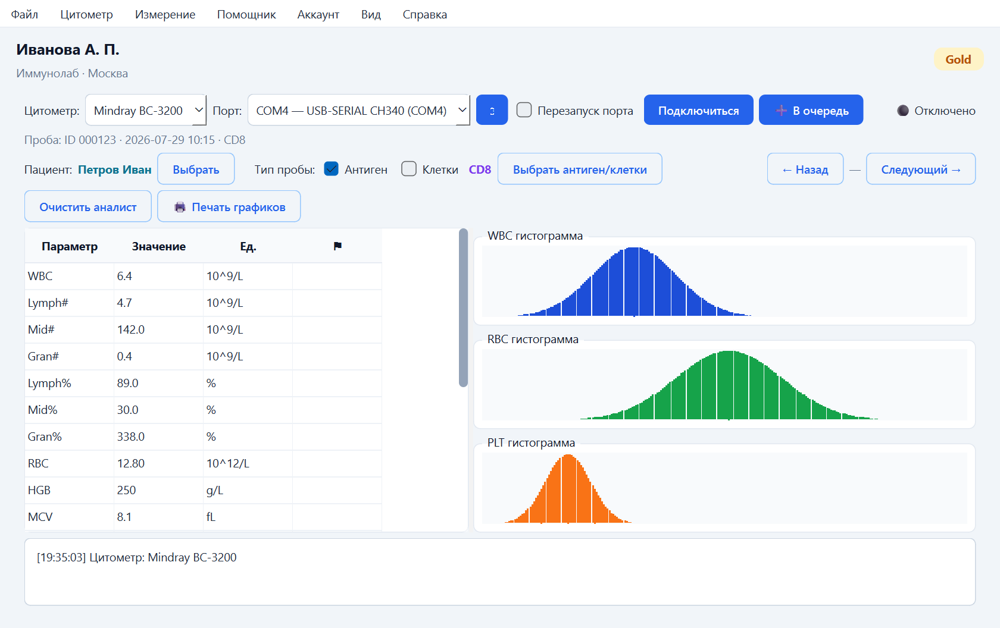
| Меню | Что внутри |
|---|---|
| Файл | Загрузить файл (открыть сохранённую пробу), Настройки, Выйти. |
| Цитометр | 🔬 Сменить цитометр (выбор модели) и ℹ️ Подробности о цитометре (модель + список показателей). |
| Измерение | Вид Гистограммы / Аналист; 🧪 Задачник; 📊 Анализ (очередь/обследования). |
| Помощник | 🤖 Druck AI — ИИ‑ассистент; 🔭 Наблюдатель — плавающее окно наблюдения. |
| Аккаунт | Личный кабинет, смена плана, выход из аккаунта. |
| Вид | Тема оформления: Система / Светлая / Тёмная. |
| Справка | Это руководство (открывается в браузере) и окно «О программе». |
Пункт Справка → ℹ️ О программе — краткая справка о приложении, автор и кнопка открытия этого руководства:
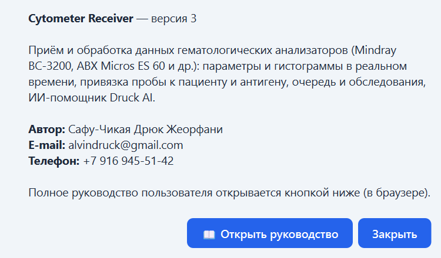
4. Цитометр и подключение к порту
В панели инструментов (верхняя строка главного окна):
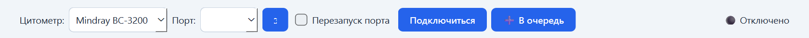
- в списке «Цитометр» выберите вашу модель (например, Mindray BC‑3200);
- в списке «Порт» выберите COM‑порт анализатора; кнопка ⟳ обновляет список;
- галочка «Перезапуск порта» (по умолчанию выключена, но запоминается — включите один раз): при подключении программа перезапускает порт в Диспетчере устройств (выключает → включает), чтобы адаптер CH340 переинициализировался, ждёт 2‑3 с и только потом открывает соединение — это то же, что вручную выключить/включить порт. Обязательно для CH340 / Mindray (иначе бывает «подключено, но данные не идут»); требует запуска программы от имени администратора;
- нажмите «Подключиться». При успехе статус справа станет 🟢 Подключено.
Смена цитометра
Сменить цитометр можно в списке «Цитометр» на панели, либо через меню Цитометр → 🔬 Сменить цитометр. Пункт Цитометр → ℹ️ Подробности о цитометре показывает текущую модель и её показатели:
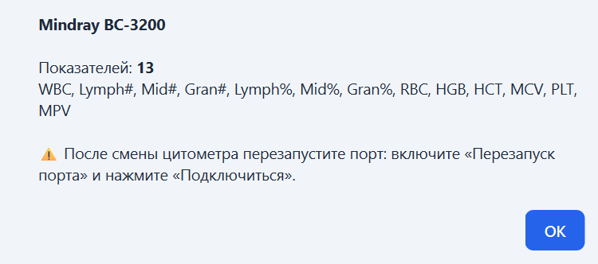
5. Получение пробы
Когда анализатор передаёт результат, программа автоматически:
- заполняет таблицу параметров слева (значение, единицы, флаг ⚠);
- рисует гистограммы WBC, RBC, PLT справа;
- показывает идентификатор пробы и время в строке «Проба:».
6. Пациент
Рядом с надписью Пациент нажмите «Выбрать» — откроется окно поиска. Список фильтруется прямо во время ввода.
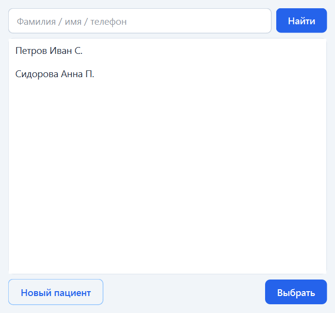
Новый пациент
Кнопка «Новый пациент» открывает форму. Вверху — Тип:
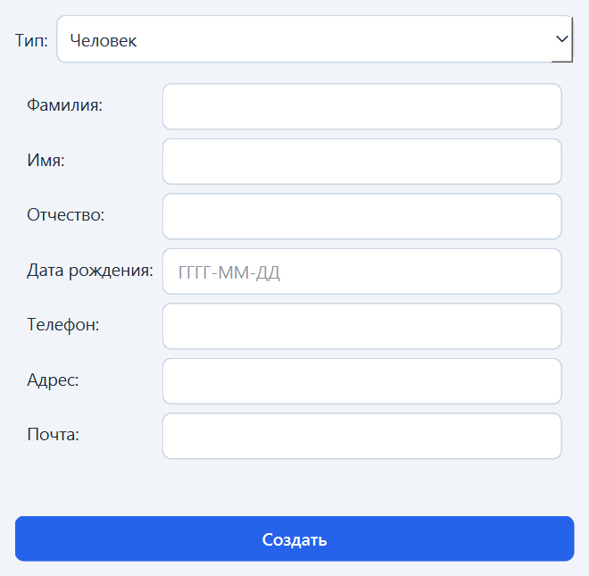
- Человек — ФИО, дата рождения, телефон, адрес, почта.
- Животное — сначала Вид (кролик, мышь…), затем кличка/название; далее домашнее (возраст, ФИО владельца) или экспериментальное (номер, группа G1–G4, даты).
- Дрожжи — название и штамм.
После выбора имя пациента показывается выделенным цветом.
7. Тип пробы и антиген
Тип пробы задаётся чекбоксами «Тип пробы»:
- ничего не отмечено — эталон (контроль, без антигена);
- «Антиген» — кровь с антигеном;
- «Клетки» — только клетки (без крови).
Для «Антиген» / «Клетки» станет активна кнопка «Выбрать антиген/клетки» — выберите антиген из справочника (список тоже фильтруется при вводе). Название антигена показывается выделенным цветом.
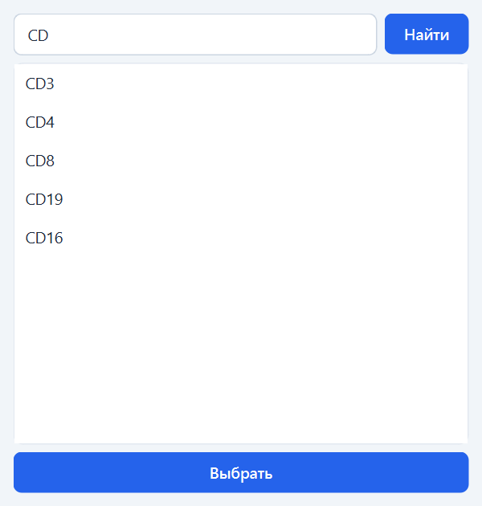
8. Орган и система (для животных)
Если выбран пациент‑животное, появляется строка «Орган/Система». Нажмите «🔍 Выбрать», найдите систему и орган (списки фильтруются при вводе), либо очистите крестиком ✖.
9. Добавление в очередь
Когда проба получена и выбран пациент (и, если нужно, антиген), нажмите «➕ В очередь» (кнопка в панели инструментов, рядом с «Подключиться»).
- тест сохраняется на сервере и дублируется в файл в папке результатов;
- рядом с антигеном загорается зелёная галочка ✅;
- пациент и антиген остаются выбранными — можно сразу добавлять следующую пробу.
10. Просмотр результатов и загрузка из файла
Листание результатов пациента
Кнопки «← Назад» и «Следующий →» листают недавние пробы текущего пациента (стоящие в очереди): показываются параметры, гистограммы, имя антигена (или «Эталон») и галочка, если проба в очереди. При смене пациента список обновляется; «Назад» неактивна, пока нет результатов.
Загрузка из файла
Файл → Загрузить файл открывает сохранённую пробу (в т.ч. из предыдущей версии). ФИО пациента и название антигена берутся из файла и показываются на экране.
11. Режим «Аналист» и печать
Измерение → Аналист накладывает эталонную кривую WBC на кривые антигенов: каждый новый антиген — отдельный график (эталон + антиген). Измерение → Гистограммы возвращает обычный вид.
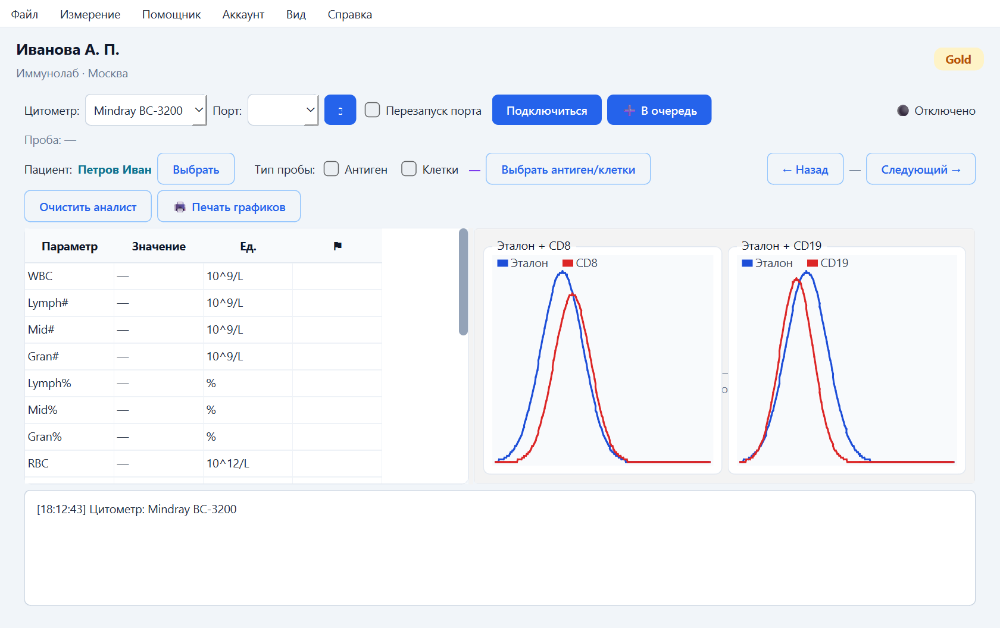
Кнопка «🖨 Печать графиков» открывает графики в браузере для печати (Ctrl+P): печатаются графики «Аналиста», а если их нет — гистограммы текущего результата. Если печатать нечего, программа сообщит об этом.
12. Задачник и Анализ (очередь/обследования)
- 🧪 Задачник — планирование серийных измерений и автодобавление проб в очередь.
- 📊 Анализ (очередь/обследования) — просмотр очереди тестов и сборка из них обследований.
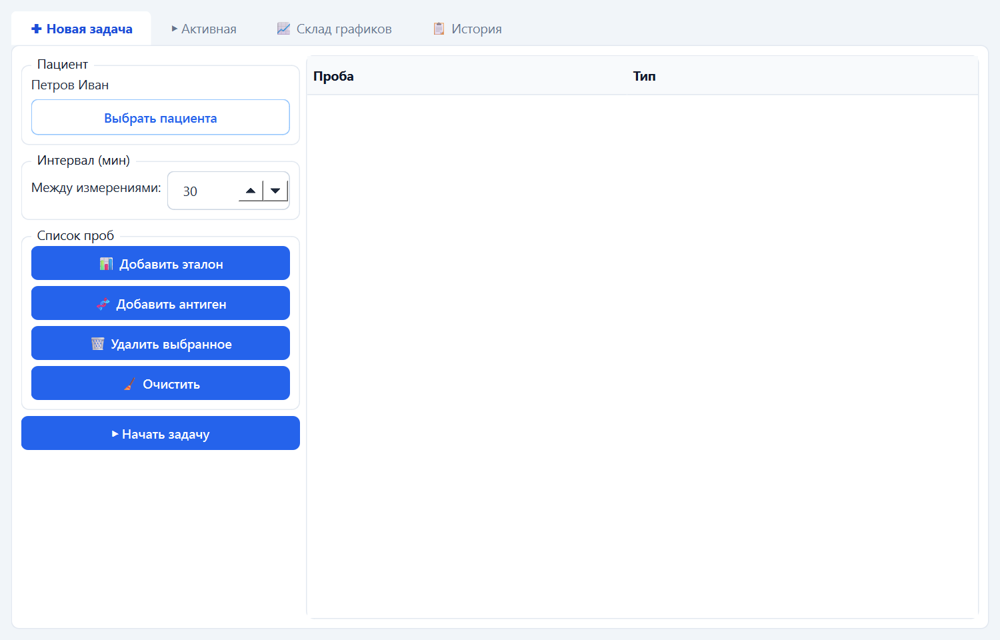
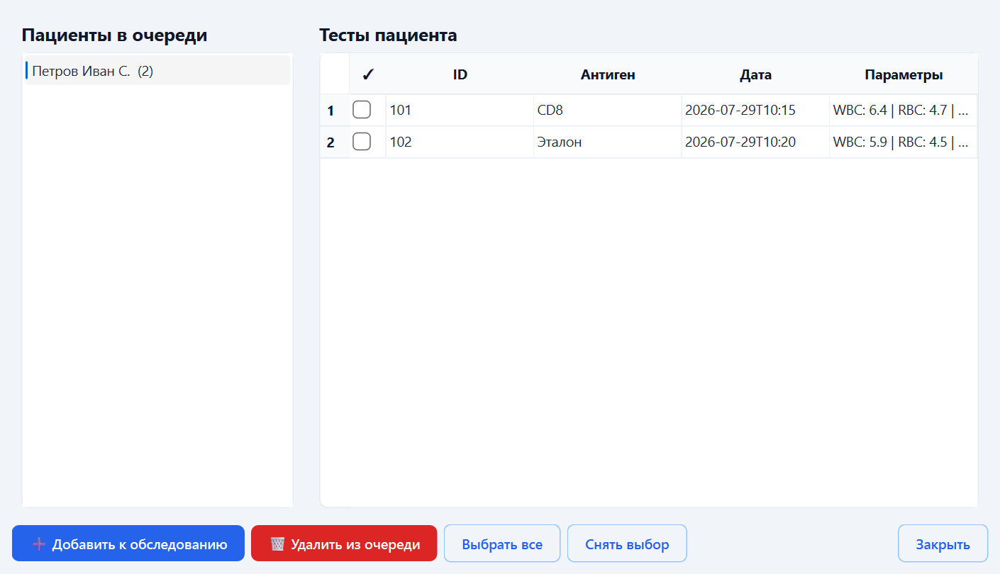
13. Druck AI и Наблюдатель
Помощник → 🤖 Druck AI запускает отдельное приложение ИИ‑ассистента (окно цитометра сворачивается). Druck AI помогает разобрать результаты, найти похожие случаи, подготовить отчёты и графики (файлы для скачивания), показывает ход рассуждений и шаги. Любое изменение данных ассистент делает только с вашего подтверждения.
Помощник → 🔭 Наблюдатель — плавающее окно поверх других, которое следит за потоком проб (замечания по WBC/RBC/HGB/PLT, заметки, папка результатов).
14. Аккаунт и настройки
Личный кабинет (Аккаунт → Личный кабинет)
Окно с четырьмя вкладками — здесь настраивается всё по аккаунту и лаборатории:
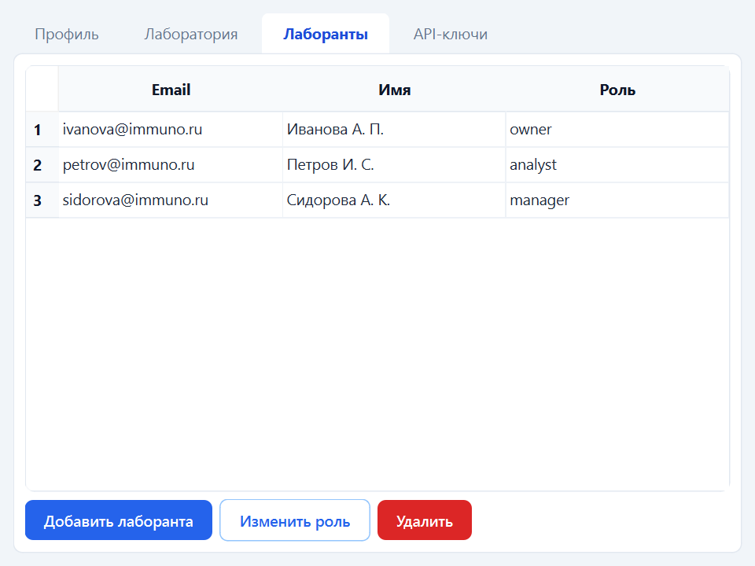
- Профиль — ваш e‑mail и имя; имя можно изменить и сохранить.
- Лаборатория — название, местоположение и план лаборатории.
- Лаборанты — список сотрудников с ролями. Владелец/админ может добавить лаборанта (email, имя, пароль, роль), изменить роль и удалить.
- API‑ключи — ключи для интеграций и локального сервера лаборатории: создать (показывается один раз — сохраните) и отозвать.
Роли: owner (владелец — все права), admin, manager, analyst. Управление лаборантами и API‑ключами, смена плана — доступны владельцу/админу; роль влияет и на права записи (например, импорт данных).
Прочее
- Аккаунт → Сменить план — только владелец. Часть функций (в т.ч. Druck AI) зависят от плана лаборатории.
- Аккаунт → Выход из аккаунта — выйти к окну входа.
- Файл → Настройки — папка результатов (по умолчанию
~/Documents/CytometerResults), автоудаление старых результатов, язык. - Вид → Тема — Система / Светлая / Тёмная.
15. Ошибки и их решение
| Что происходит | Что делать |
|---|---|
| В правом верхнем углу красным горит «Ошибка» (порт/устройство недоступно). | Откройте Диспетчер устройств (кнопка Windows → «Диспетчер устройств») → раздел Порты (COM и LPT). Найдите USB‑SERIAL CH340, правой кнопкой → Отключить устройство, затем снова правой кнопкой → Включить устройство. После этого нажмите «Подключиться». |
| При подключении: «failed to open port» (порт занят или выключен). | Включите галочку «Перезапуск порта» и нажмите «Подключиться» — программа сама перезапустит порт в Диспетчере устройств, подождёт 2‑3 с и откроет соединение. Запускайте программу от имени администратора. Вручную: Диспетчер устройств → Порты (COM) → правый клик → «Включить устройство». |
| Статус 🟢 Подключено, но данные не идут (нет жёлтого «connected»). | Адаптер CH340 «залип». Включите галочку «Перезапуск порта» (она запоминается) и запустите программу от имени администратора — при подключении порт автоматически перезапускается (выкл→вкл), и данные пойдут (статус станет 🟡 connected). Вручную: в Диспетчере устройств → Порты (COM) → правый клик по CH340 → «Отключить устройство», затем «Включить устройство». |
| Данные не отображаются; в таблице параметров прочерки/пустые ячейки. | Скорее всего выбрана не та модель цитометра. В списке «Цитометр» выберите модель, на которой вы работаете, и подключитесь снова. |
| При входе: «…Remote end closed connection without response». | В поле «Сервер» неверный адрес/порт. Используйте адрес сервера с портом :8000 (например http://100.x.x.x:8000), а не порт базы данных. Проверьте, что сервер запущен. |
| При входе: «Connection refused» / нет ответа. | Сервер выключен или недоступен по сети. Убедитесь, что на сервере запущен Docker и вы с сервером в одной сети (одна Wi‑Fi/LAN или оба в Tailscale). Проверьте адрес и порт :8000. |
| «Неверная почта или пароль» (401). | Проверьте раскладку и регистр. Если пароль забыт — обратитесь к администратору лаборатории. |
| Внутренняя ошибка сервера 500 при загрузке данных. | Проблема на стороне сервера/базы. Сообщите разработчику адрес запроса из сообщения и время — контакты ниже. |
| Не видно названия антигена или галочки очереди при просмотре. | Проверьте доступность сервера (имена антигенов подгружаются с него). Перевыберите пациента, чтобы обновить список результатов. |
| Druck AI не открывается или отвечает пусто. | Проверьте, что ИИ‑сервис запущен, а у лаборатории соответствующий план. Если ответ пуст — переформулируйте запрос. |
16. Контакты
Если вы столкнулись с неописанной ошибкой — запишите текст из журнала и обратитесь к разработчику:
Автор: Сафу‑Чикая Дрюк Жеорфани
E‑mail: alvindruck@gmail.com
Телефон: +7 916 945‑51‑42